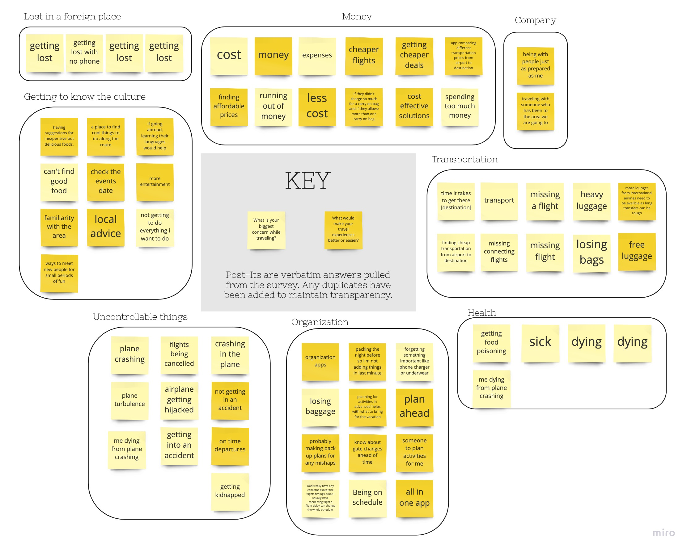
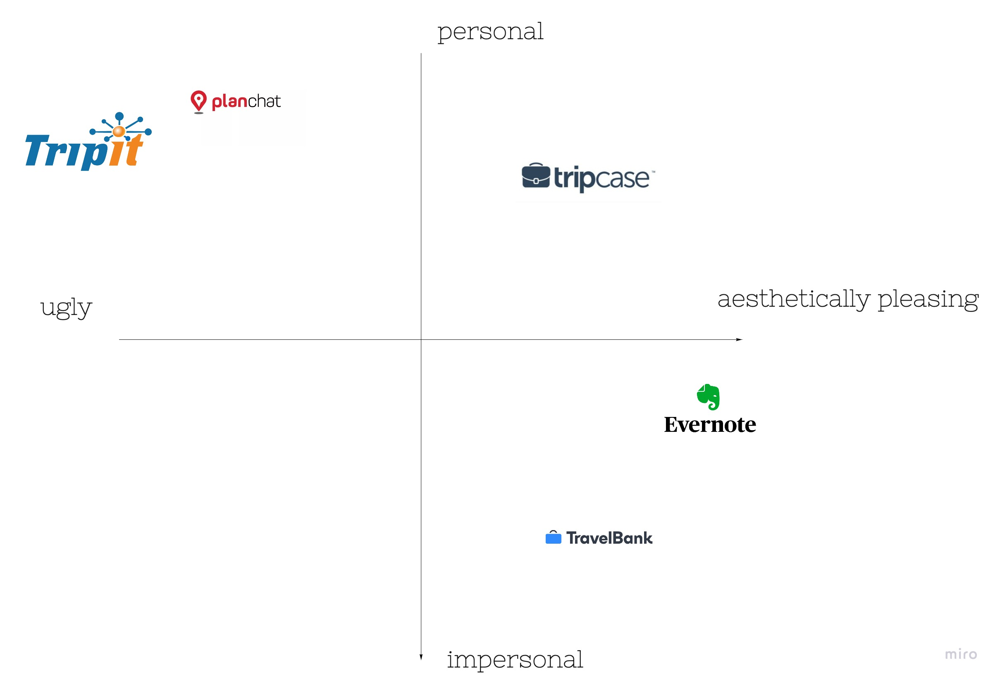
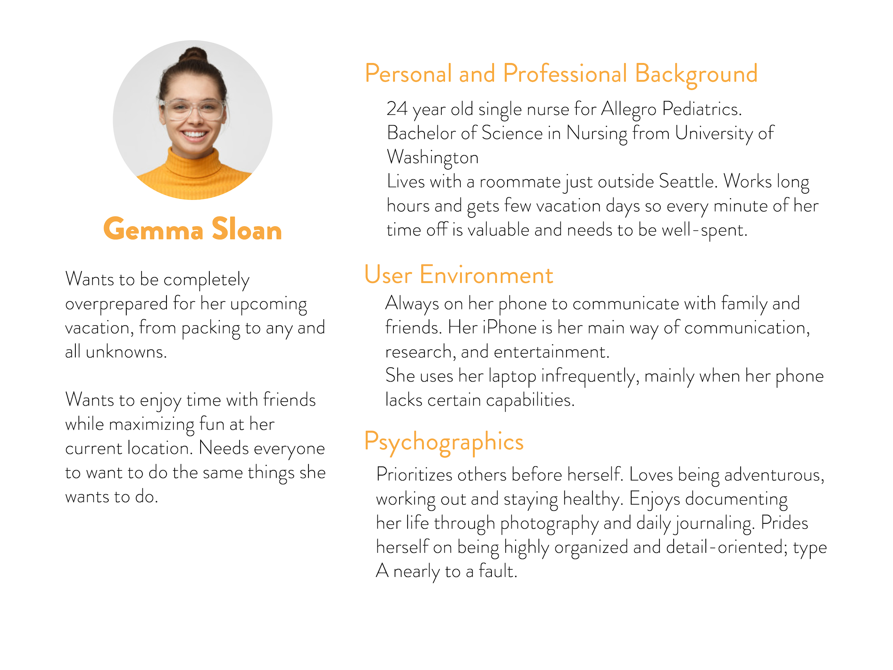
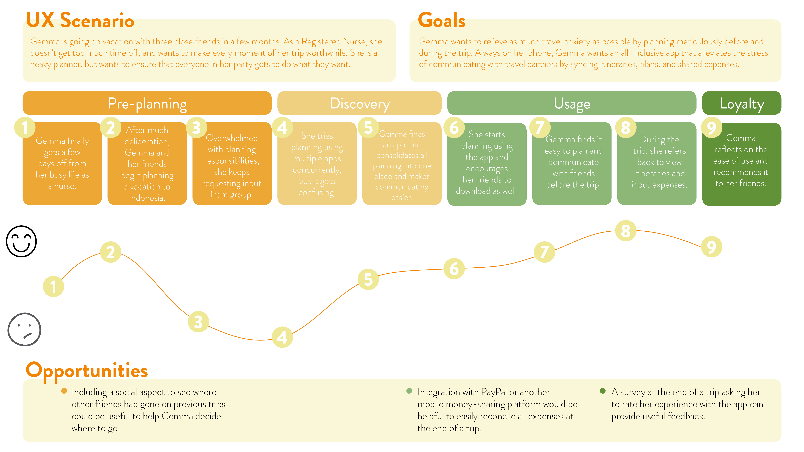
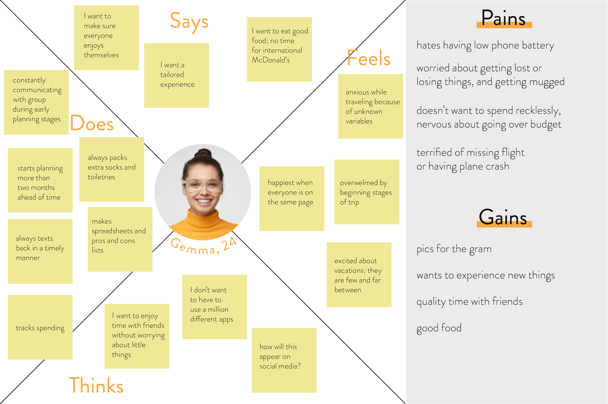
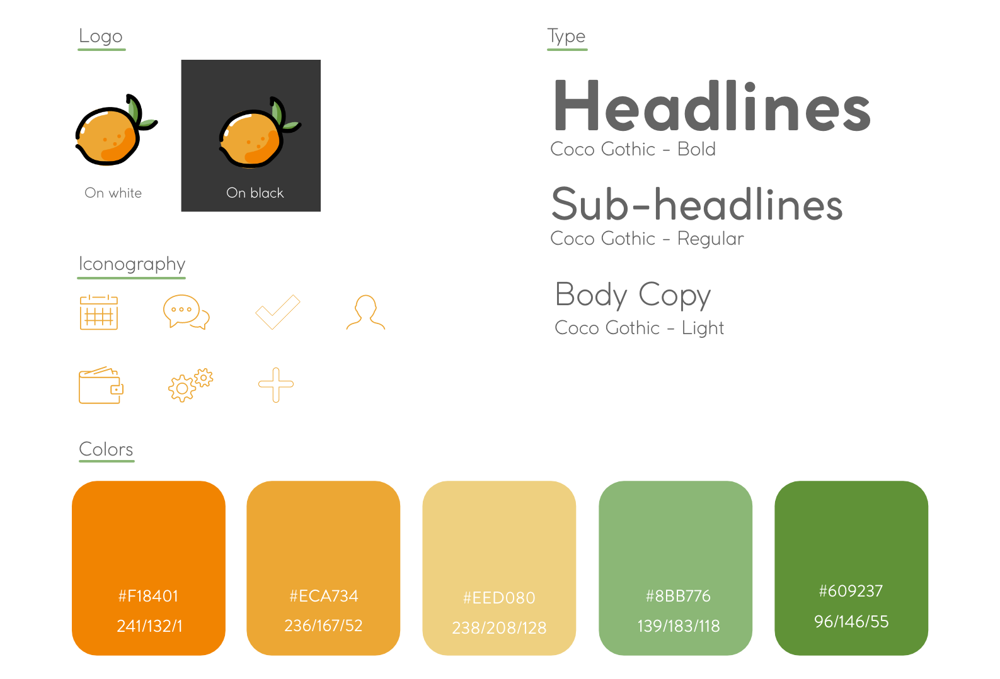
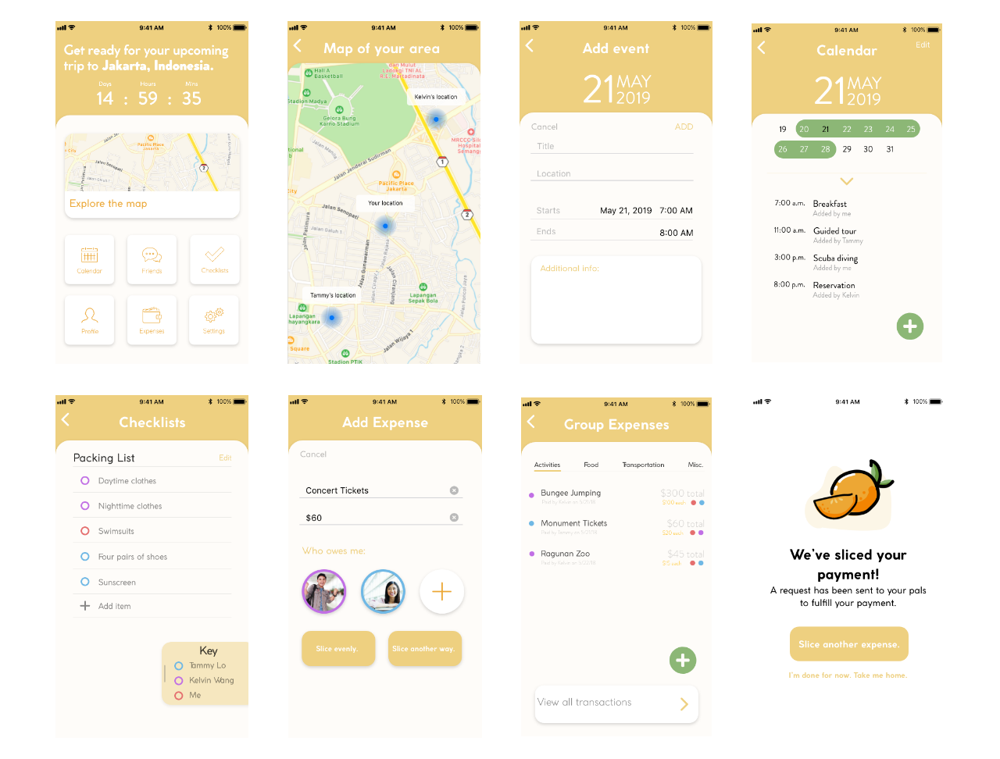

CASE STUDY
Slice
Mobile App User Interface Design
PROJECT TYPE
Class project: Mobile App Design
DURATION
Two weeks
MEMBERS
Quinn Saito
SKILLS
User research and personas, wireframing, competitor analysis, prototyping, user testing
back to top
SLICE WAS MY FIRST ENDEAVOR INTO UI,
and still stands as one of my favorite projects I’ve created.
Slice is a group travel app that was inspired by a recent trip I had taken with some friends. Though the trip itself was memorable, the planning leading up to takeoff was an absolute terror. We had three different Google Sheets to contain all of our information, expenses, and itineraries. This is where a group travel planning app like Slice would have come in handy.
Slice breaks down the planning process into manageable, well, slices. On one inclusive app, users can share flight information, combine checklists, create personalized day by day itineraries, and even track and split expenses.
PROJECT OVERVIEW
The Problem
Young adults travel together frequently, but may struggle to figure out all the logistics. Some travelers prefer to go with the flow, while others in the same party need every aspect of the trip mapped out by the minute.
The Solution
A group that plans together, stays together. Named for the many segments that make up an orange, Slice combines all aspects of a group vacation into one collaborative planning experience.
USER RESEARCH
Understanding the basics
I began my research with a survey. I wanted to find out more about the way young adults travel, especially the reasons why they travel and the different ways they plan for trips. After surveying a sample of 30 individuals ranging from 19 to 25, a few trends surfaced.
3.83
Average # of apps respondents use while planning trips
40%
Of respondents start in-depth planning two or more months in advance to departure
50%
Of respondents mentioned
the need for more organization while planning
Although the respondents are traveling multiple times a year and 73.3% plan their vacations 1 or greater months ahead of time, 15 out of 30 respondents mentioned the need for more organization in their plans.
I then took this info to fine-tune questions for user interviews.
After gathering my survey information, I took what I learned to tailor morespecific questions to more deeply understand potential users. I talked to fiveusers total, making sure to vary the ages of individuals to see if travelplanning habits varied by age. I asked the following questions:
1. How would you describe your travel style?
2. What are your biggest concerns while traveling?
3. What is your main goal while traveling?
4. What apps do you currently use for travel, and why?
5. What would make your travel experience easier or better, and why?
6. In your opinion, what is the worst aspect of traveling?
After receiving all of our information, I organized the data from the surveys and interviews into an affinity diagram to help organize my thoughts and find a direction:
AFFINITY DIAGRAM

COMPETITOR ANALYSIS
To further understand the current market of existing planning apps, I created a conducted a competitor analysis.The biggest competitors I found were TripCase, Planchat, and TripIt. All of these apps are personal to the individual, but lack a delightful experience. Another notable competitor to Slice is Evernote. Although it isn’t directly used for travel planning, the app does maintain a cult following for its ease of use in everyday planning that is easily transferrable to travel. TravelBank is another app to be wary of, as it makes the financial aspect of travel planning easier, though it is mainly used for business reimbursements.

Slice’s Top Competition:
Trip It
TripCase
Planchat
Evernote
TravelBank
Researching competing apps was incredibly helpful to the development of Slice. My findings here aligned with my survey results: users will need more than one app to successfully plan a trip from start to finish.
USER PERSONA
The survey and user interviews gave me enough insight to now create a user persona.
Get to know Gemma Sloan, an amalgamation of the survey and user interview data.

GEMMA'S USER JOURNEY AND EMPATHY MAPS
To further empathize with the user, I created an empathy map and user journey map.


USER FLOW AND LOW FIDELITY WEB WIRE FRAMING
Before I could start drawing out preliminary wireframes, I had to lay out the actual steps a user would generally take. Here are two iterations of the user flow diagram that show the first steps of Slice.
The next step was to actually draw out a few key screens, turn them into low fidelity wireframes, and test them out on users.
LOW FIDELITY PROTOTYPING
The low fidelity wireframes translated to low fidelity prototypes we could test.
Users didn’t like the bottom navigation bar, and felt everything was too close together to carry out actions cleanly.
MORE PROTOTYPES AND MORE CHANGES
Slice's interface changed multiple times before finding its personal style.
I played around a lot with the interface to determine what I the final version would look like. One night after spending countless hours on Dribbble, I attempted this version of Slice. After showing it to a few users, they said it felt too cartoonish and almost childish to be a travel app for adults (they were right). They were confused by the home navigation, which I quickly realized is nearly impossible to function using prototyping software like InVision or XD. I had to keep in mind that while prototyping, I am at the mercy of those softwares.
From there I moved into an iOS version of the prototype, using all iOS components to create something that looked like an un-delete-able iPhone app that no one uses. Many users agreed.
DESIGN CHOICES

I wanted the design of Slice to feel bright and playful. I settled on the font Coco Gothic for both headings and body copy. The roundness of the letters adds a youthful voice while remaining easily legible. Early iterations of the app had seen slab fonts mixed in with short and compact Brandon Grotesque, but some users felt it was distracting to have multiple fonts to carry out one action.
I had a great time designing the orange logo. I wanted to create a logo that would match well with the playful style choices of the app itself. After finalizing the logo, it was time to select the colors of Slice. I pulled the main colors from the logo, orange and green, to be the primary colors. Users enjoyed the pops of orange throughout the app~~~~~
Final Color prototype
Here are a few screens from the final color prototype.

user testing plan
I created a user testing plan for the final prototype using two scenarios for users to carry out:
Scenario 1:
Imagine you are going on vacation to Jakarta, Indonesia. Open Slice as a new user, add your vacation details, view the calendar and add a new event.
Scenario 2:
Imagine you are going on vacation to Jakarta, Indonesia. Once you have added vacation details, view the map, and add a shared expense.
Here's what the users had to say:
User 1
"I didn’t know to swipe up to view calendar details by the day"
User 2
"An onboarding process would help clear up some confusion"
User 3
"I was confused by the colored circles on the shared expense page"
final thoughts
Talking about the future...
In the future I would love to add a simple onboarding process to ease any confusion users may have, and adding arrows to show the movement each page goes. If Slice were a real app, I would love to see integration withPayPal and Venmo to make fulfilling payments much easier.
Slice has gone through many iterations, and has even changed dramatically from the initial iOS prototype because I wanted to create something I was truly proud of. After finishing the prototype however, I wish I spent less time on the initial “create a plan” screens and more time on the details of the different functions. I also wish I had wired the prototype inXD, and taken more time to learn how to animate.
As far as this project goes, I have greatly enjoyed learning how to design for other people, not just myself. It was always frustrating to see users completely missing the objective of a screen, but their confusion is indicative of a flawed design. Using the design process, I learned how to be more empathetic toward the user and create a flow that was comfortable for more people than just myself.
Overall, I greatly enjoyed this project. I had fun designing the look of the app, and it was reassuring to hear users tell me they would use Slice in real life. Learning how to understand different users and talk with those who have contrasting opinions has taught me a new way to solve problems.
THANKS FOR STICKING AROUND UNTIL THE END.
See you soon!